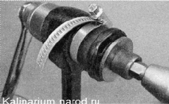

Замена резинометаллических шарниров
Резинометаллические шарниры заменяем при проворачивании шарнира в рычаге, при потере эластичности, выкрашивании или выдавливании резинового элемента шарнира из посадочного места.
Для выпoлнения работы потребуется съемник чашечный универсальный.
Снятие
1. Снимаем поперечный рычаг подвески с автомобиля.
Резинометаллический шарнир (РМШ) наружного конца рычага (соединения рычага с продольной растяжкой) состоит из двух отдельных частей.
Для снятия РМШ наружного конца рычага:
2. Зажимаем рычаг в тисках и тонким зубилом отгибаем края наружного металлического кольца одной из половин шарнира.
3. Более крупным зубилом выпрессовываем часть шарнира.
4. Таким же способом выпрессовываем вторую часть шарнира.
Для снятия РМШ внутреннего конца рычага:
5. Чашечным универсальным съемником или отрезком трубы и болтом с гайкой и шайбами подходящего диаметра (подойдет болт крепления головки блока цилиндров) выпрессовываем резинометаллический шарнир крепления рычага к кузову.
Установка
Для установки РМШ наружного конца рычага;
1. При помощи тисков и упорной пластины запрессовываем части нового шарнира.
2. Окончательно осаживаем части шарнира ударами молотка через оправку подходящего диаметра.
Для установки РМШ внутреннего конца рычага:
1. Надеваем шарнир на болт приспособления и наносим на наружную поверхность шарнира мыльный раствор.
2. Заворачивая гайку болта, прижимаем шарнир к рычагу

3. Шлицевой отверткой заправляем край шарнира в отверстие рычага.
Совет
Для облегчения работы можно стянуть резиновую втулку хомутом.
4. Полностью запрессовываем шарнир в отверстие рычага.
5. Устанавливаем рычаг на автомобиль.